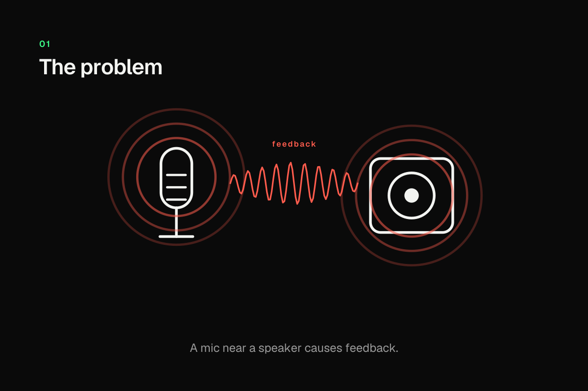
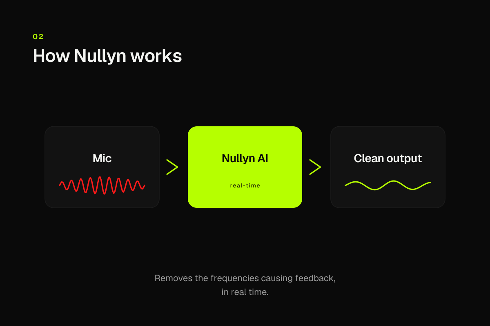
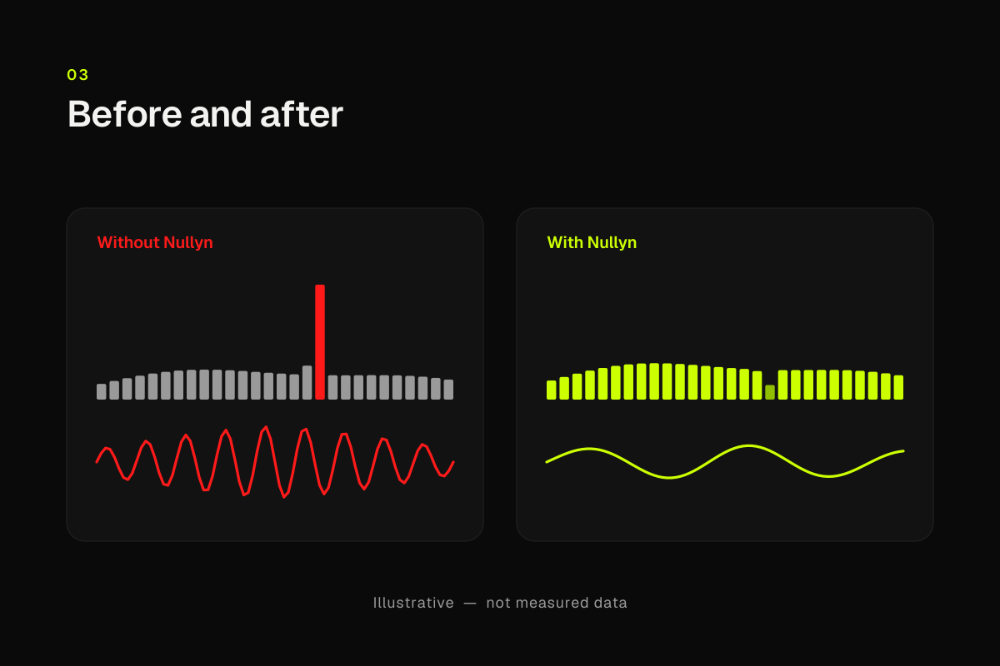

Automatic tools still leave engineers on manual control
After five decades of research, many sound-system technicians still prefer to control acoustic feedback by hand, mainly because available automatic solutions have not been reliable enough.
Live sound · AI
When a microphone sits too close to a speaker, it howls. Nullyn AI takes the mic output, removes the frequencies causing feedback in real time, and sends a clean signal on — with real-time, ultra-low latency.
In development. No product is shipping yet, and we will not overclaim what the system can do.
Illustrative — not measured data. Axes show frequency and level with no numeric claims.
Research
The claims below are taken from published papers, a manufacturer guide, and converter datasheets. Figures reported in different studies are not directly comparable. None of these numbers is a Nullyn measurement.
After five decades of research, many sound-system technicians still prefer to control acoustic feedback by hand, mainly because available automatic solutions have not been reliable enough.
Shure’s training guide states that a feedback reducer “can provide a maximum of 6 to 10 dB of additional gain,” and that audible feedback has to occur before the reducer can act. A research survey of notch-filter howling suppression puts the practical upper bound at about 10 dB.
Sources: Sigismondi, Shure, 2016; van Waterschoot & Moonen, 2011
Adaptive feedback cancellation is widely considered the most promising classical approach, with stable-gain increases of 15 to 20 dB reported as practically achievable. In the same survey’s own simulations, the best variant reached about 9 dB on average and about 12 dB at most.
These figures come from different experimental setups and should not be read as a ranking.
Classical howl detectors confuse held notes and instruments with feedback. In the survey evaluation, a peak-to-average detector needed a 33 dB threshold for speech but 55 dB for audio, “since the tonal components in an audio signal are much more easily misclassified as howling components.” Two of three notch algorithms tested produced extremely poor sound quality on audio. In hearing aids, five of six feedback-cancellation techniques did worse on a tonal opera signal than on speech.
Sources: van Waterschoot & Moonen, 2011; van Waterschoot & Moonen, JAES, 2010; Spriet, Moonen & Wouters, J. Acoust. Soc. Am., 2010
Neural howling-suppression studies published since 2022, as reviewed for this work, train and test on speech corpora. None of the papers opened for the review evaluates on music or instruments. Most of them also simulate loop delays of 100 to 500 ms, far from a live speaker-to-microphone path.
Sources: Zhang, Yu & Yu, ICASSP 2023 (arXiv:2302.09252); Zhang et al., Interspeech 2023; Zhang, Yu & Yu, ASRU 2023 (arXiv:2305.01637); Zhang et al., Interspeech 2024; Zhang et al., ICASSP 2024; Wu et al., Interspeech 2025 (arXiv:2505.15914); Voit & Doclo, arXiv:2606.03832, 2026
In a study of 19 performing musicians (AES Convention 123, 2007), tolerance depended more on the instrument than on the person, and wedge monitoring generally tolerated more latency than in-ear monitoring. At 85% confidence, the highest added digital latency still rated “Good” for in-ear vocals was 1 ms. (The test system’s own 1.4 ms throughput was counted as 0 ms.)
This budget is a reading of one 19-musician study, not a published standard.
Source: Lester & Boley, AES Convention 123, paper 7198, 2007
Nullyn’s intended audio path processes each sample individually at 96 kHz and adds about one sample (10.4 µs at 96 kHz) of processing delay. That figure is the sample period (1/96,000 s), not a measured product latency, and it is not the delay of the whole box.
Converters dominate analog-in to analog-out delay. Nullyn’s v1 hardware is designed around a TI PCM3060-class codec. At 96 kHz its published digital-filter group delays are 17.4/fS for the ADC (181.3 µs) and 20/fS for the DAC (208.3 µs). Adding one DSP sample (10.4 µs) gives about 0.4 ms total, analog in to analog out. This is arithmetic from the datasheet, not a measurement; serial-interface framing and the final converter choice still have to be measured. That is under the 1 ms rated “Good” for in-ear vocals in the study above.
The hardware is designed to be open source and built from off-the-shelf parts.
Sources: TI PCM3060 datasheet; Lester & Boley, AES Convention 123, paper 7198, 2007
A review of the literature found no AES, IEC, or ANSI standard test method specifically for feedback suppressors in sound reinforcement. Closest practice comes from research protocols, such as maximum stable gain and added stable gain, not a formal product standard.
This is a search result, not a proven absence.
Discussion: van Waterschoot & Moonen, 2011 (research protocols for MSG and reliability); Sigismondi, Shure, 2016 (gain-before-feedback as used in practice)
Whitepaper
The draft paper, Toward Low-Latency Neural Feedback Suppression for Live Music, reviews the evidence above and sets out how Nullyn will be measured. It has not been peer reviewed, and Nullyn’s own results have not been reported yet. The full text will be released after review.
The evaluation is built around a device simulator: a 96 kHz per-sample notch-filter path with a parallel neural control path that runs alongside the audio. Planned tests cover gain-before-feedback, detection, recovery, and distortion, on speech and on music, using established metrics such as maximum and added stable gain, path latency, howl and recovery time, and spectral distortion.
How it works
A simple path from the microphone to a clean signal, with real-time, ultra-low latency.



Status: in development. Performance claims will follow measured tests, not marketing copy. We are not promising that feedback can be removed in every room, on every system, under every condition.
Early access
If you mix events, weddings, or live production and want to try the first builds, we’d like to hear from you.
Get early accessWe’re onboarding pilot venues and FOH engineers — early access opening soon.